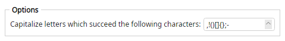

Uppercases the single character immediately after any character in your configured list. Other characters are left unchanged.
If the character list is empty, the name is unchanged.
hello,world!(again)[is]it-fine? >>> hello,World!(Again)[Is]It-Fine?
hello.world_again >>> hello.World_Again